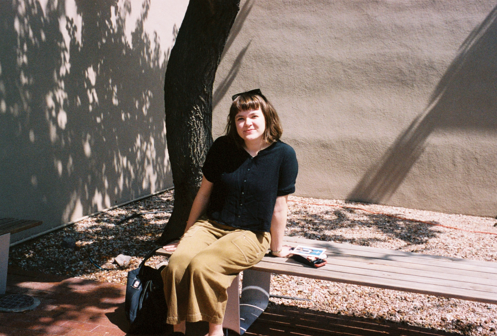

writing


projects


MDS
BIO:
Architectural worker in the American Midwest. Professional experience in architecture includes researching, writing, designing, teaching. Interest in interdisciplinary collaborations, mapping, utopia, critical social and cultural history, and spatial research.
CURRENTLY:
✿ collaborating with Instutite for Linear Research. LINK
✿ working at WJW Architects in Chicago.
✿ part-time faculty in Architecture department at School of the Art Institute in Chicago (SAIC).
M.Arch 2020, University of Minnesota, School of Architecture.
B.Arts 2014, Carleton College (American Studies).
B. 1992, Omaha, NE.